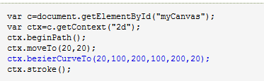

Canvas 画布
canvas 元素用于在网页上绘制图形。canvas 拥有多种绘制路径、矩形、圆形、字符以及添加图像的方法。
Canvas的创建和绘制canvas 元素本身是没有绘图能力的。所有的绘制工作必须在 JavaScript 内部完成：
getContext("2d") 对象是内建的 HTML5 对象，拥有多种绘制路径、矩形、圆形、字符以及添加图像的方法。
通过线条绘制矩形指定从何处开始，在何处结束
绘制圆形 渐变色
放置图像
二次贝塞尔曲线
渐变色
放置图像
二次贝塞尔曲线
参数依次是：贝塞尔控制点的 x、y 坐标，结束点的 x、y 坐标
三次贝塞尔曲线 参数依次是：贝塞尔控制点1的 x、y 坐标，贝塞尔控制点2的 x、y 坐标，结束点的 x、y 坐标